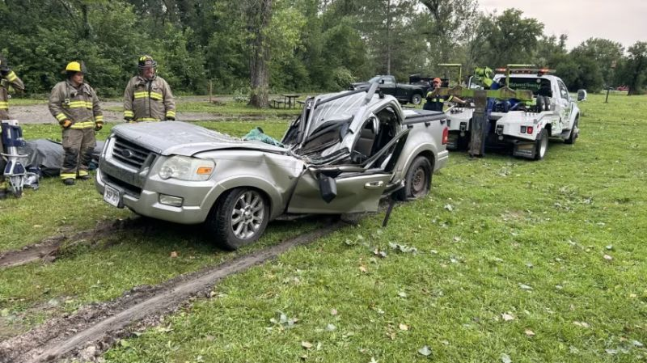

Tormentas en Nebraska dejan un muerto y un herido, y obligan a evacuar a cientos de reclusos
Fuertes tormentas registradas el sábado en el este de Nebraska causaron la muerte de una persona y dejaron gravemente herida a otra en un parque estatal, además de desplazar a cientos de reclusos después de que dos unidades de la prisión donde se encontraban resultaran dañadas, informaron las autoridades, mientras otros estados del Medio Oeste también se preparaban para el mal tiempo.
El Departamento de Bomberos Voluntarios de Waterloo fue llamado al parque estatal Two Rivers poco antes de las 7 a.m. hora local del sábado, cuando los primeros en responder encontraron un vehículo aplastado por un gran álamo. El árbol se había derrumbado cuando la tormenta trajo ráfagas de más de 130 km/h a la zona, según el Servicio Meteorológico Nacional. Una mujer que se encontraba en el vehículo fue declarada muerta en el lugar, mientras que un hombre quedó atrapado en el interior, según informó el Departamento de bomberos en un comunicado de prensa.
Los bomberos tardaron unos 90 minutos en liberar al hombre debido al tamaño y el peso del árbol, según informó el departamento. Una vez liberado, el hombre fue trasladado a un hospital de Omaha con heridas que ponían en peligro su vida, según informó el jefe de bomberos de Waterloo, Travis Harlow. El parque estatal, un popular lugar para acampar, se encuentra a unos 8 kilómetros al oeste de la frontera occidental de Omaha.
Los fuertes vientos causaron daños generalizados en el este de Nebraska, derribando árboles, dañando tejados y arrancando líneas eléctricas. A unos 32 kilómetros al norte de Omaha, en Blair, el viento arrancó el techo de un almacén. Miles de personas se quedaron sin electricidad inmediatamente después. En la capital del estado, Lincoln, las tormentas dañaron dos unidades de vivienda en la Penitenciaría Estatal de Nebraska, lo que obligó a trasladar a 387 presos, según informó el Departamento de Servicios Correccionales del estado en un comunicado.
El servicio meteorológico indicó que era posible que se produjeran más tormentas fuertes en la zona central del país durante la noche del sábado a este domingo, desde el oeste de Colorado hasta Kansas, Nebraska, Iowa, el norte de Missouri e Illinois y Wisconsin.